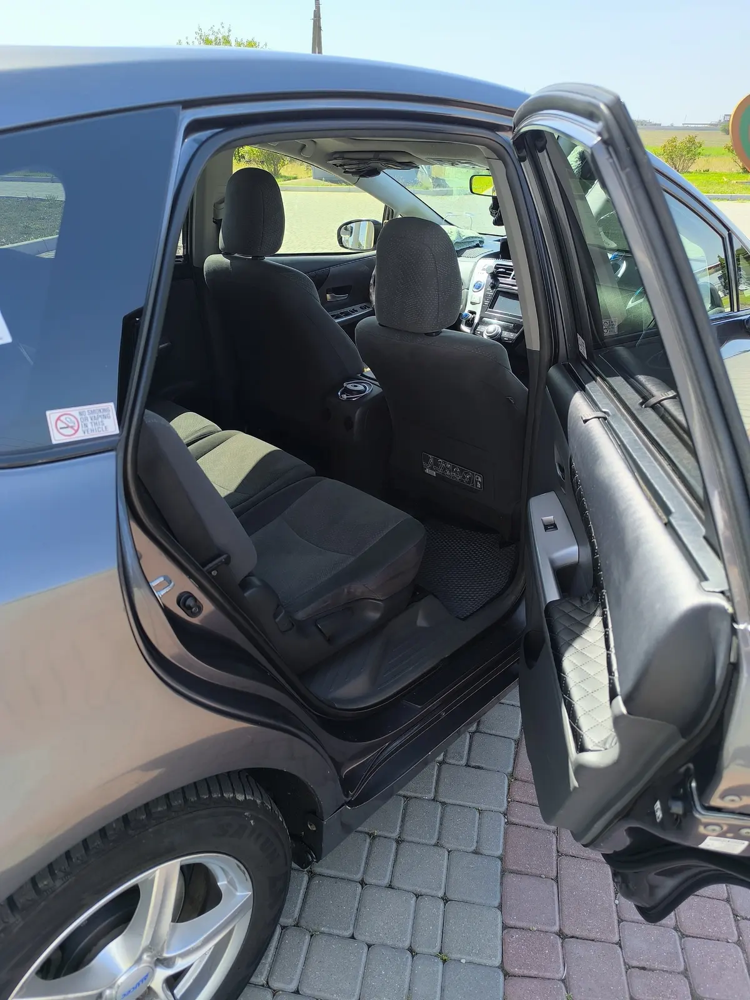
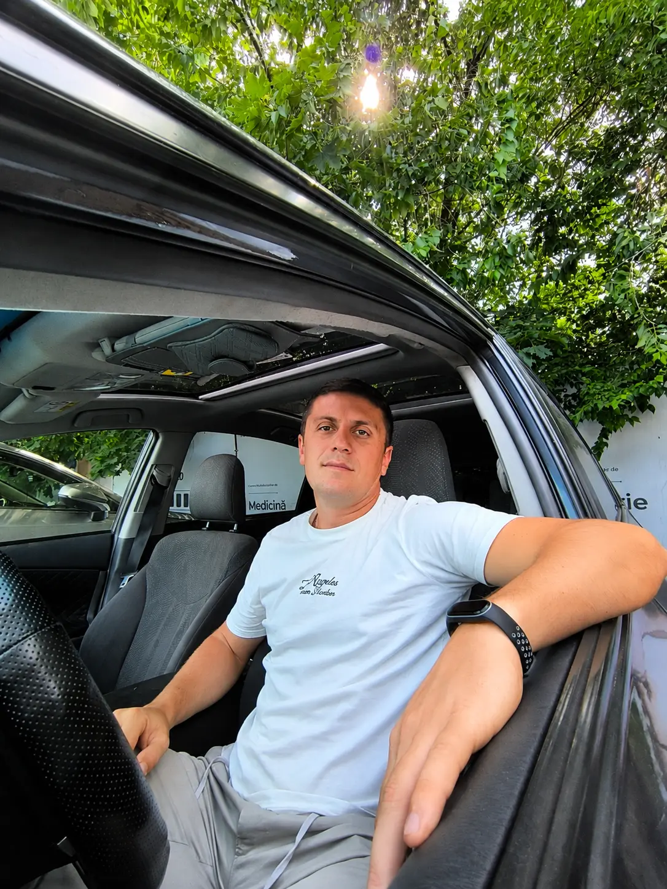

Заявка
Пишете маршрут, дату, время и количество пассажиров.
Тирасполь • Бендеры • Кишинёв • Аэропорт • Яссы • Молдова
Поездки по предварительному заказу из Тирасполя, Бендер и других городов Приднестровья. Встречаем в аэропорту, следим за временем прилёта, помогаем с багажом и заранее согласовываем стоимость.
Пишете маршрут, дату, время и количество пассажиров.
Согласовываем стоимость и подтверждаем время подачи.
Автомобиль приезжает к заранее согласованному месту и времени.
Помогаем с багажом и довозим до нужной точки.
Такси Бендеры — Кишинёв • подача от адреса • фиксированная цена
Цена и условия поездки →От двери до терминала • помощь с багажом • встреча после прилёта
Трансфер в аэропорт →К вылету и после прилёта • предварительное бронирование
Подробнее →Ранний вылет, позднее прилёт или ночная поездка — подача к заранее согласованному времени.

Toyota Prius+ — просторный и комфортный автомобиль для трансферов по Приднестровью, Молдове и поездок в аэропорты.

От двери до двери. Если едете в аэропорт, на вокзал или возвращаетесь домой — поможем разместить багаж и довезём до нужного адреса.
Уточнить объём багажа →Toyota Prius+ подходит для семейных поездок и трансферов с чемоданами.
Поможем погрузить и аккуратно разместить багаж перед поездкой.
Забираем от адреса и доставляем прямо к терминалу, вокзалу или гостинице.
Сообщите заранее количество чемоданов — подберём подходящий вариант.
Цена согласовывается до поездки — без неожиданных доплат после маршрута.
Подтверждение заказа, контакт перед подачей и сопровождение по маршруту.
Чистый автомобиль, Wi‑Fi, вода и помощь с багажом.
Детское кресло предоставляется по предварительному запросу.

Просторный салон Toyota Prius+ для комфортной поездки с семьёй и багажом.

Остаюсь на связи от подтверждения заказа до завершения поездки. Даже если за рулём другой водитель — каждый трансфер под моим контролем.
Отзывы клиентов в Google.
Выберите удобный мессенджер — ответим и подтвердим стоимость.